«Сокол» · экран «Камеры» · блок «План» · 25.10 · прототипы без логики
Сейчас блок рисует одну камеру на тёмном поле. Профессиональные системы показывают всю площадку на подложке: снимок или схема, все камеры с тем, что они видят, техника со статусом и следом, слои включаются галочками. Ниже — как сейчас, как у них, три варианта и что успеваем к показу 26.10.
Ближе всего к Genetec и Milestone. Переключатель «Спутник · Схема» и кнопка «Слои» сразу видны, их не надо искать.
Позы камер уже есть, новых данных не нужно. Снимок-подложка — один файл, ставим только с согласия Юлая.
Вариант В: правка в самом плане. Сводку по воротам и строку статусов берём из варианта Б.
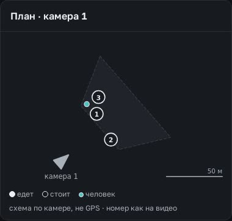
Что рисует. Одна камера — та, что в большом окне. Её конус, серый многоугольник размеченной земли (~50 м), машины кружками (кольцо — стоит, точка — едет), люди бирюзовыми точками, шкала 50 м. Координаты считаются из позы камеры, перевод из кадра в метры (clip-plan.js, ground.js).
Почему скудно.
На вкладке «План»/3D подложка — нарисованный пример (корпус, кран, котлован на 800×520) с подписью «подложка — пример». С настоящей площадкой он не совпадает.
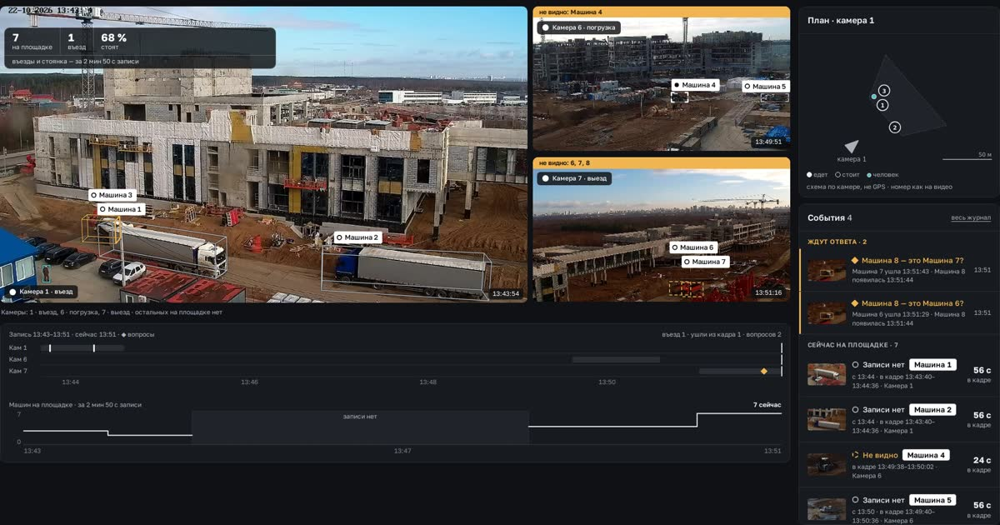
Настоящие экраны. Кнопка-ссылка ведёт на источник картинки. Почти у всех одно и то же: подложка (снимок или план здания), камеры с конусом обзора, объекты с цветом статуса, слои и масштаб.
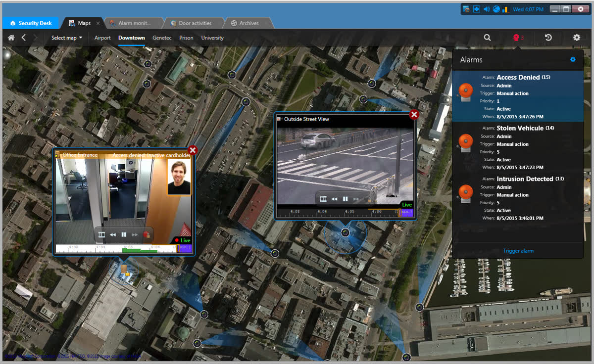
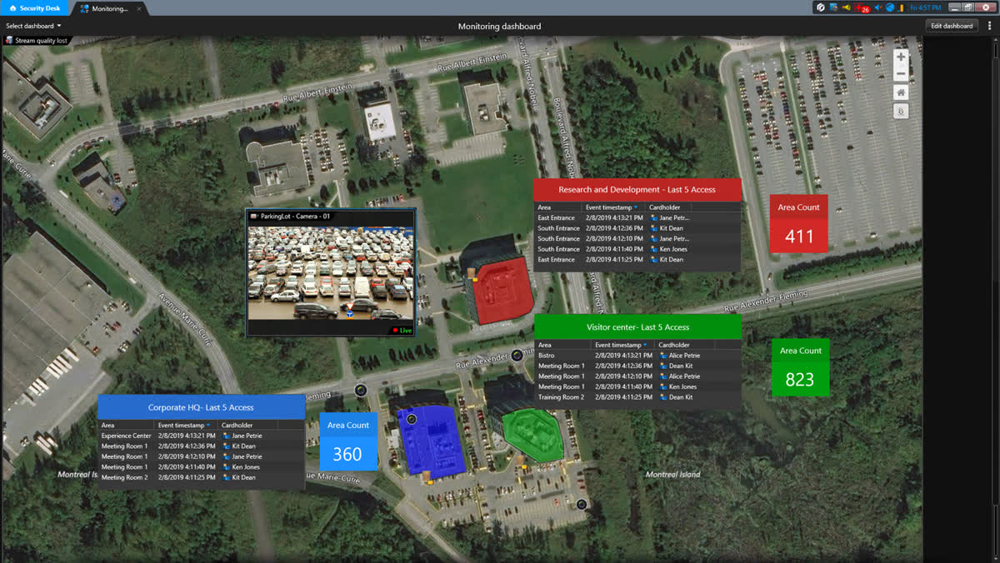
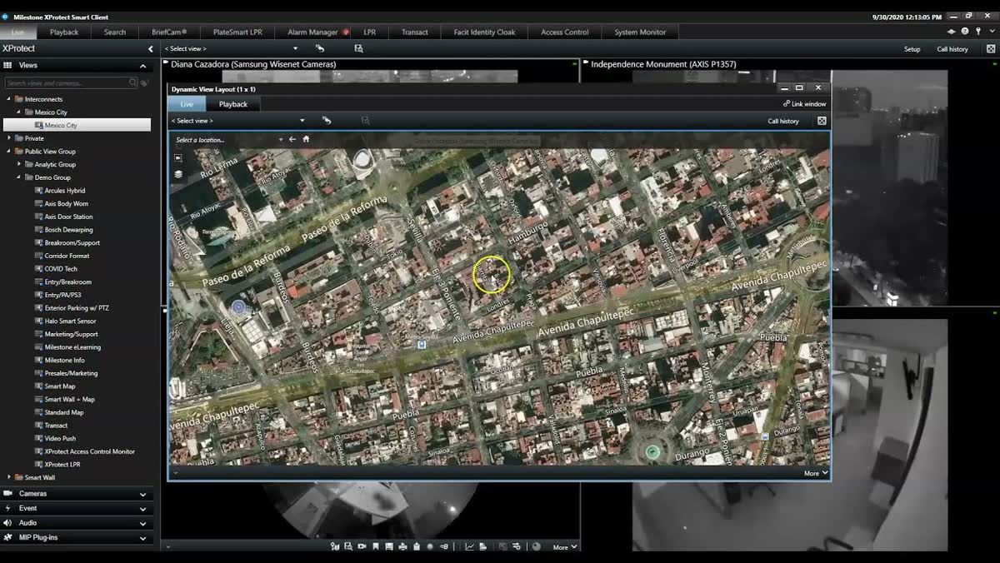
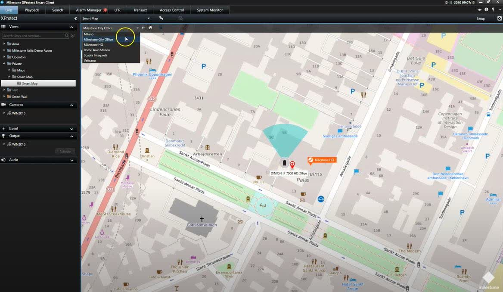
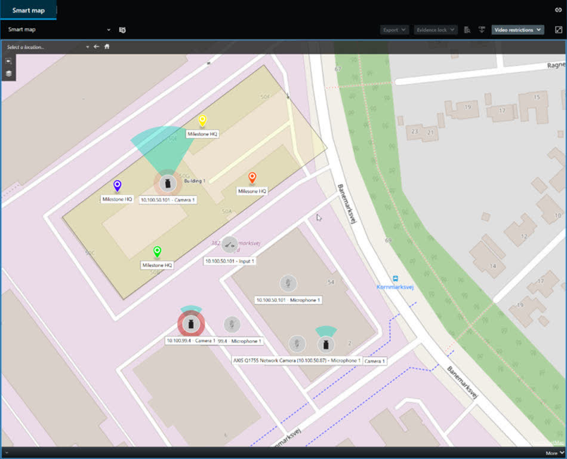
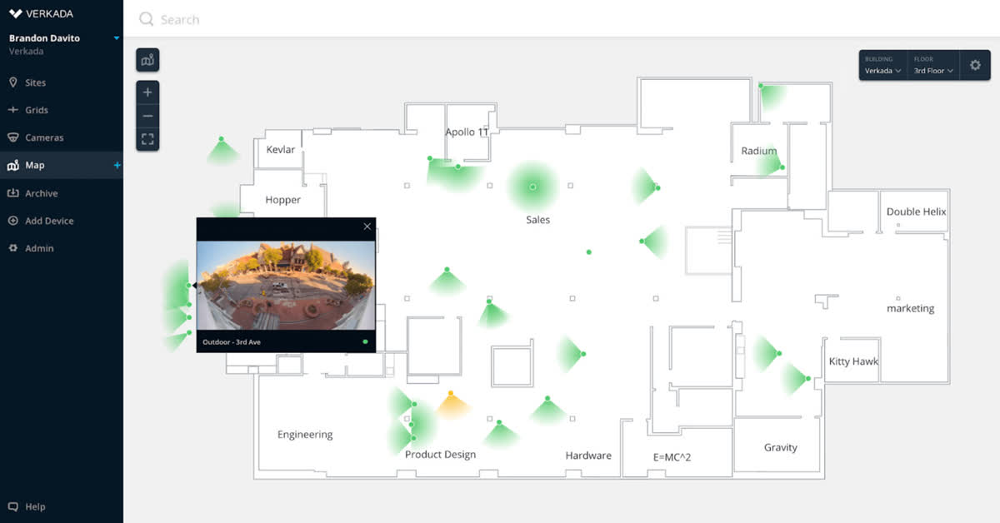
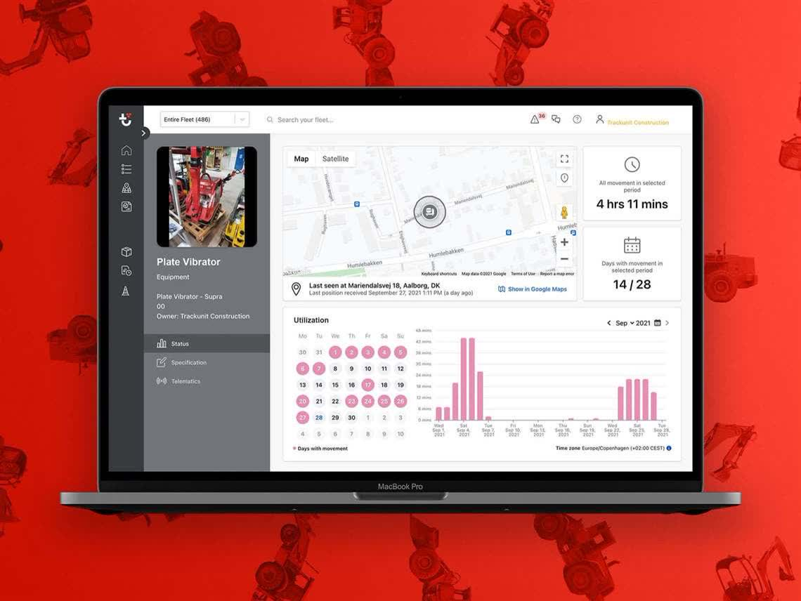
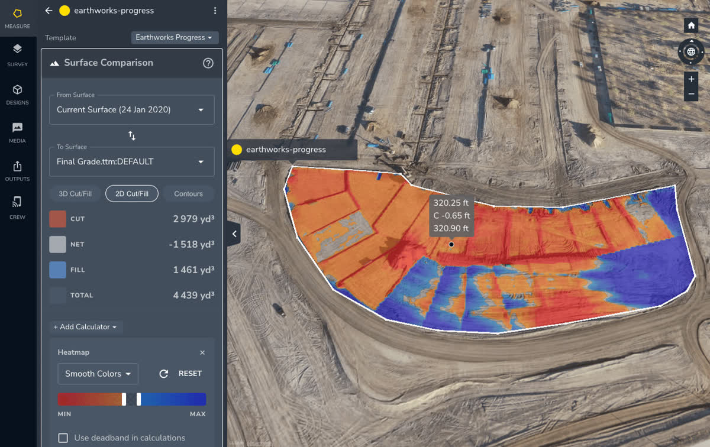
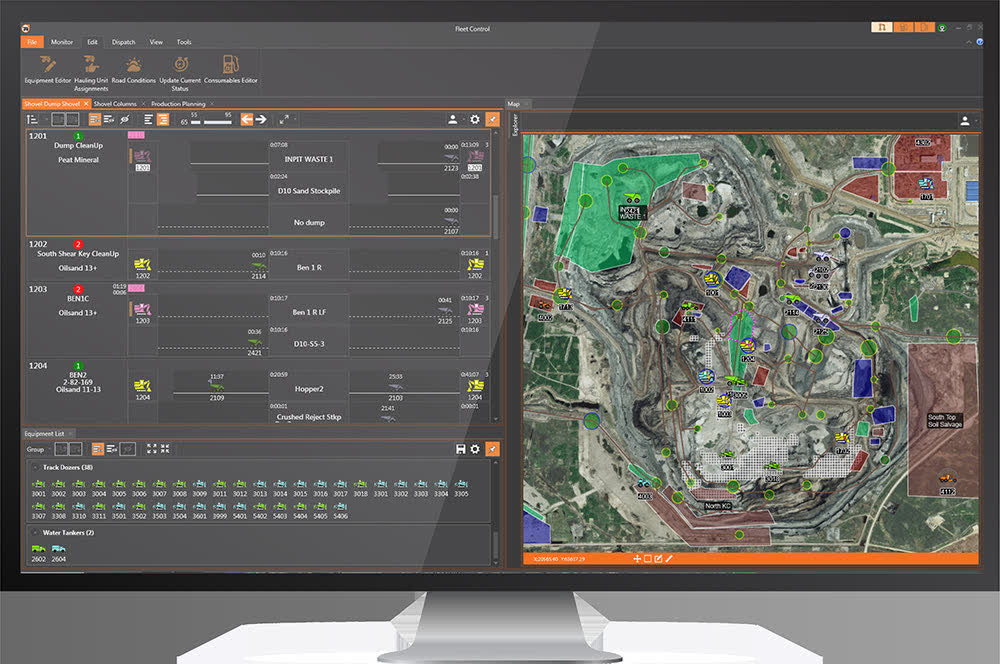
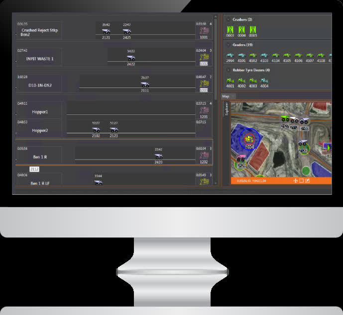
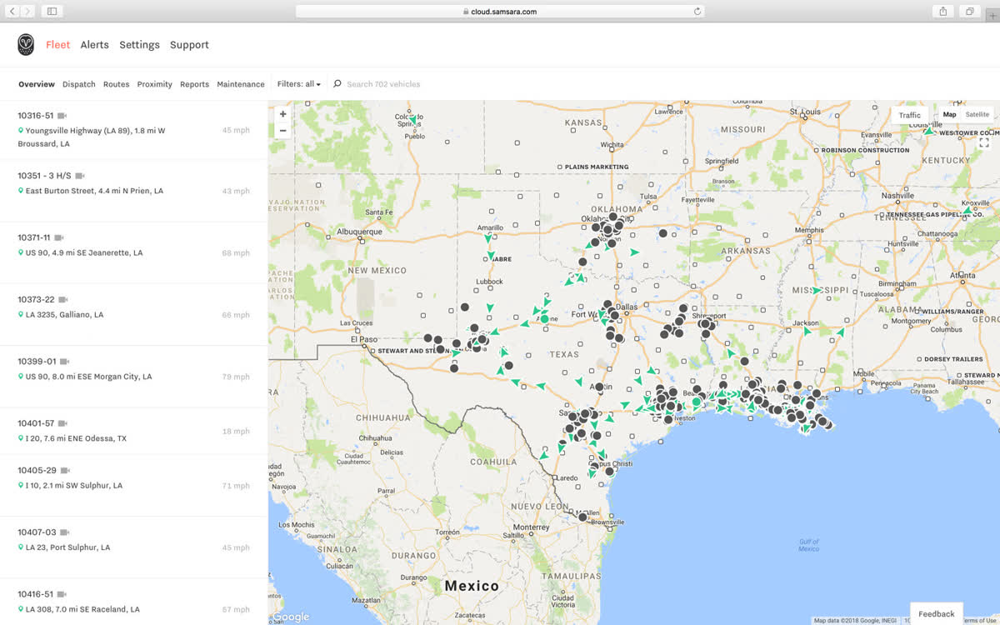
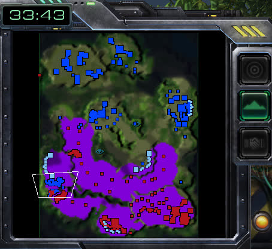
Ещё из прежних подборок: Komatsu Smart Construction (refs/komatsu-r38.webp), Verkada Command (refs/vk-cmd.jpg), Genetec (refs/gn-8.jpg, gn-r05.webp), вид сверху со счётчиками на линиях (refs/nvidia-r02.webp), шторка «до / после» по спутнику (refs/gods-eye-shtorka.jpg). Экраны OpenSpace, Buildots и EarthCam с картой площадки не нашёл: у них план здания с точками съёмки, а не карта техники.
| Подложка | Что даёт | Условия (кратко) | Для нас |
|---|---|---|---|
| Esri World Imagery | Снимок кампуса от 12.09.2025, 0,31 м: видны корпуса, дороги, техника | Бесплатно 2 млн плиток в месяц, дальше $0,15 за 1000; подпись «Powered by Esri» и поставщики обязательны; офлайн — только слой «for Export» (тарифы, подпись) | в прототипе один файл |
| Яндекс Карты API | Свежие снимки по России, схема на русском | Бесплатно только для открытых проектов; закрытая или платная система — коммерческая лицензия (на странице тарифов — от 208 800 ₽ в год) (тарифы). Спутник в бесплатном — не проверено | после показа, если клиент в РФ потребует |
| 2ГИС, Mapbox | Схема и снимки | не проверено | — |
| Sentinel-2 (Copernicus) | Бесплатно, каждые 5 дней, 10 м | Открытая лицензия | Технику не видно, годится для шторки «до / после» по месяцам |
| Свой снимок с дрона | Лучшая точность, свежий снимок после каждого облёта (так у Propeller и Komatsu) | Свой, без чужих лицензий; нужен облёт | лучшая подложка для продукта |
| Схема | Обводим контуры по снимку или по генплану. Работает и для площадки без координат | Своя | в прототипе Б обведено вручную |
Площадку без координат (чужие ролики, другие ракурсы) показываем схемой: зоны камер в метрах уже есть, а контуры обводятся по кадру. OpenStreetMap для обводки был недоступен (сервер Overpass отвечал 502), поэтому обвёл по снимку вручную.
Всё внутри экрана «Камеры», по снимку пульта. Цвета и значки статусов — как у рамок (работает · едет · стоит · ждёт ответа · не видно). Страницы живые: тему можно переключить кнопкой ◐.
Снимок площадки, конусы всех трёх камер (активная ярче), пунктир — где считаем. Машина — тёмная плашка: значок статуса как у рамки, номер, тип. Следы едущих, люди точками, опасная зона штриховкой. Переключатель «Спутник · Схема», кнопки «Слои» и «Во весь экран», север, масштаб, легенда со счётом. В тёмной теме снимок приглушён, чтобы не спорить с видео.
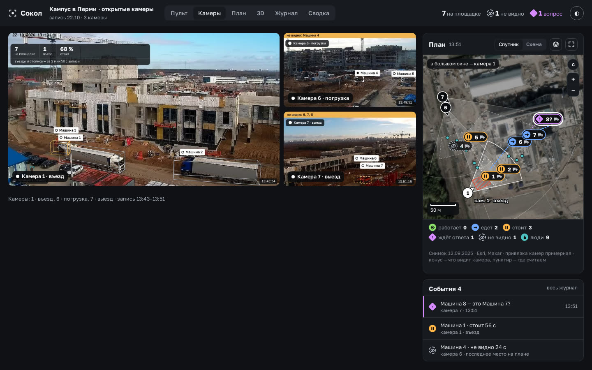
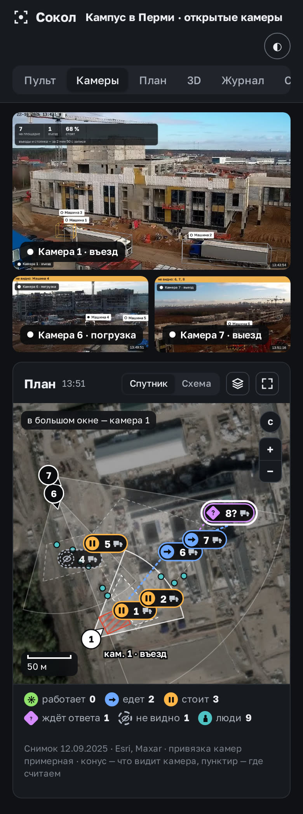
Без снимка: контуры площадки, дороги и корпуса обведены по снимку. Клетка 10 м, сверху строка статусов (как у диспетчера карьера), на въезде счётчик ↓ въехало · ↑ выехало, переключатель «Вся площадка / У камеры». Подходит для площадок без координат и для печати в отчёт.
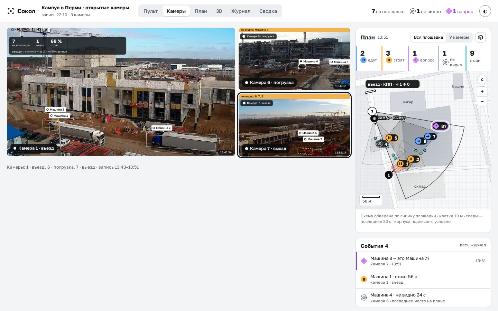
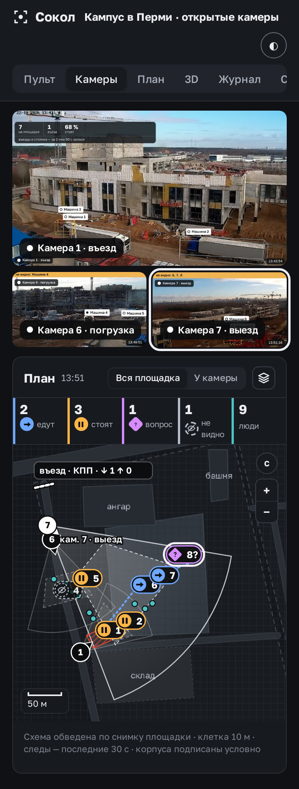
Карта во всю ширину, видео сбоку. Подложка «Обе»: снимок и поверх контуры схемы. Открыта панель «Слои и настройка», на телефоне — шторка снизу. Включена правка: ручки углов склада, опасной зоны и ворот, поворот камеры, точки A и B для привязки к снимку, внизу «Отменить · Сохранить».
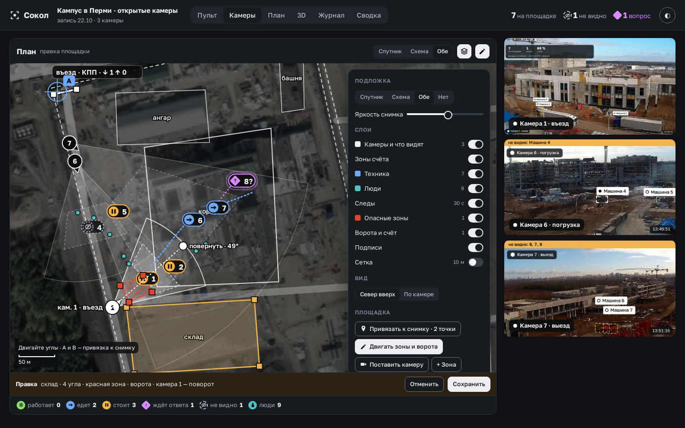
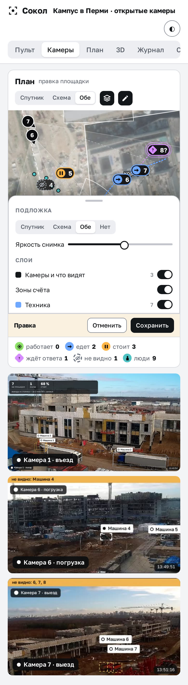
Снимок: Esri World Imagery (Maxar, WorldView-3, 12.09.2025), Powered by Esri. Чужие экраны показаны как образцы, права — у их владельцев.